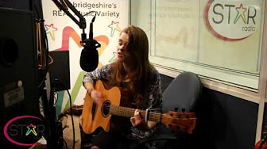

STAR Radio
@ellied Dec 2016
Played the guestlist on STAR radio. Had to make up a song in 10 mins about January... Scary but awseome!
Here's the videos of my songs:
| Tears for Fears  |
Sound Right |
On the spot! |